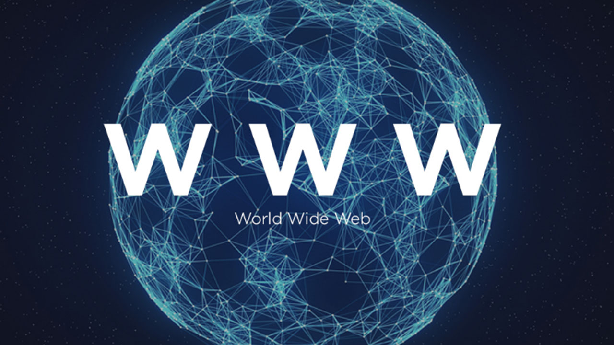

Le web avant 2000
1989 : L'invention du concept par Tim Berners-Lee au CERN
1991 : Premier site web mis en ligne
1993 : Le World Wide Web devient public
1994 : Fondation du W3C pour standardiser le web
1995 : Lancement de navigateurs populaires comme Netscape
1998 : Création de Google
 
Le web après 2000
2004 : Lancement de Facebook
2005 : Youtube est fondé
2007 : Introduction de l'iPhone et du web mobile
2010 : Popularisation des réseaux sociaux
2015 : Adoption massive du HTML
2020 : Croissance du télétravail et des outils en ligne
2024 : L'essor de l'IA générative sur le web


Site réalisé par Omar Ladnany 2B